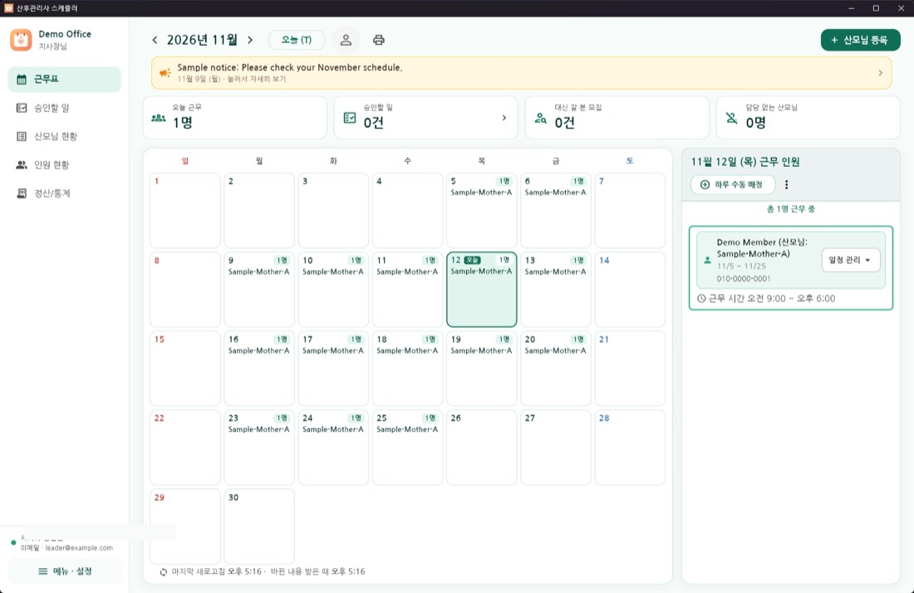
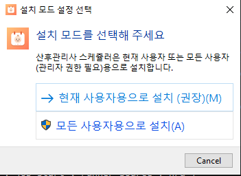
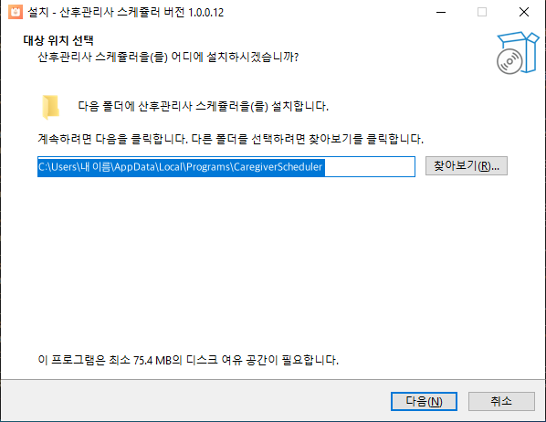
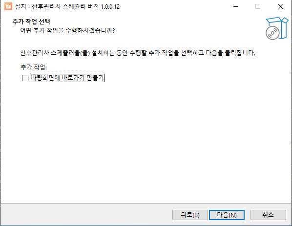
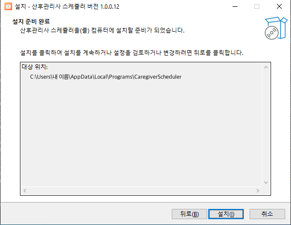
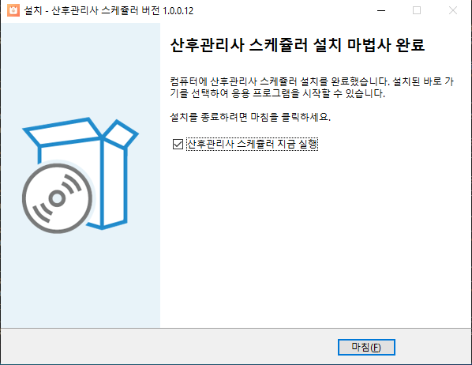
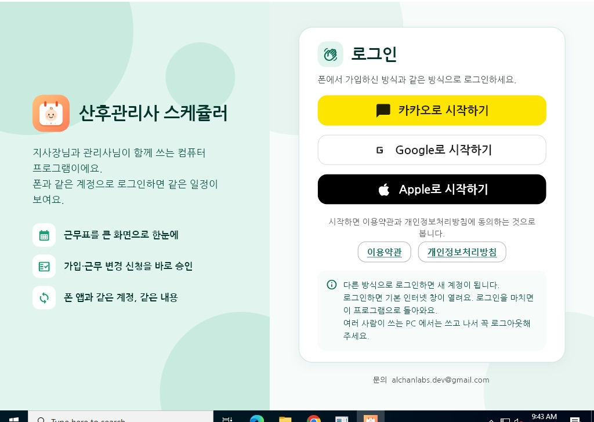

산후관리사 스케쥴러
산후관리사 사무실의 근무표를 한곳에서 관리합니다. 지사장님은 산모님 일정을 등록하고 담당 관리사님을 정하고, 관리사님은 내 근무를 확인하고 필요한 변경을 신청합니다.

받기
윈도우 10·11 (64비트) · 약 20MB
설치 방법 보기
App Store · Google Play 출시 후 이곳에 링크를 올립니다
윈도우 프로그램 최신 판: 1.0.0 (빌드 12) · 2026년 11월 12일
윈도우에 설치하기
-
설치 파일을 받아 엽니다
위 [윈도우 설치 파일 받기]를 누르면 CaregiverScheduler-Setup 파일이 다운로드 폴더에 저장됩니다. 받은 파일을 두 번 눌러 엽니다.
-
"Windows의 PC 보호" 창이 뜨면 [추가 정보] → [실행]
아직 마이크로소프트 인증서를 붙이지 않은 작은 회사의 프로그램이라 처음에 이 안내가 뜰 수 있습니다. 파란 창 안의 [추가 정보]를 누르고, 아래에 나타나는 [실행]을 누르세요.
-
[현재 사용자용으로 설치 (권장)]을 누릅니다
관리자 비밀번호 없이 지금 로그인한 사람에게 설치됩니다.

-
설치할 곳은 그대로 두고 [다음]

-
바탕화면 바로가기가 필요하면 체크하고 [다음]

-
[설치]를 누릅니다

-
[마침]을 누르면 프로그램이 켜집니다
다음부터는 시작 메뉴의 산후관리사 스케쥴러로 엽니다.

-
폰에서 쓰던 방식으로 로그인합니다
카카오·Google·Apple 중 폰에서 가입한 방식과 같은 것을 고르면, 기본 인터넷 창이 열렸다가 로그인이 끝나면 프로그램으로 돌아옵니다.

여러 사람이 쓰는 사무실 PC라면 쓰고 나서 꼭 왼쪽 아래 [메뉴 · 설정] → 로그아웃을 눌러 주세요.
웹에서 쓰기
-
인터넷 창에서 주소를 엽니다
dolbomi.pages.dev — 설치할 것이 없습니다. 자주 쓰면 즐겨찾기에 넣어 두세요.
-
폰에서 쓰던 방식으로 로그인합니다
로그인 창이 작은 새 창으로 열립니다. 열리지 않으면 주소창 오른쪽의 팝업 차단 표시를 눌러 허용해 주세요. 인터넷 창(탭)을 닫으면 저절로 로그아웃됩니다.
자주 묻는 것
폰과 PC에서 같은 일정이 보이나요?
네. 같은 계정으로 로그인하면 폰·태블릿·PC 어디서나 같은 사무실 일정이 보이고, 한쪽에서 바꾼 내용이 바로 반영됩니다.
새 버전은 어떻게 받나요?
이 페이지에서 설치 파일을 다시 받아 그대로 설치하면 이전 판 위에 덮어 설치됩니다. 일정은 서버에 있어 그대로입니다. 웹은 늘 최신 판이 열립니다.
윈도우 프로그램을 지우려면?
윈도우 설정 → 앱 → 설치된 앱에서 산후관리사 스케쥴러를 찾아 [제거]를 누르세요. 지우기 전에 프로그램에서 로그아웃해 두면 PC에 로그인 기록이 남지 않습니다.
문의하기
사용 문의, 오류 신고, 개인정보 관련 문의를 받습니다.